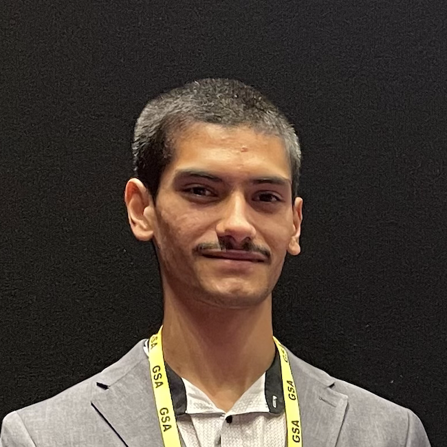
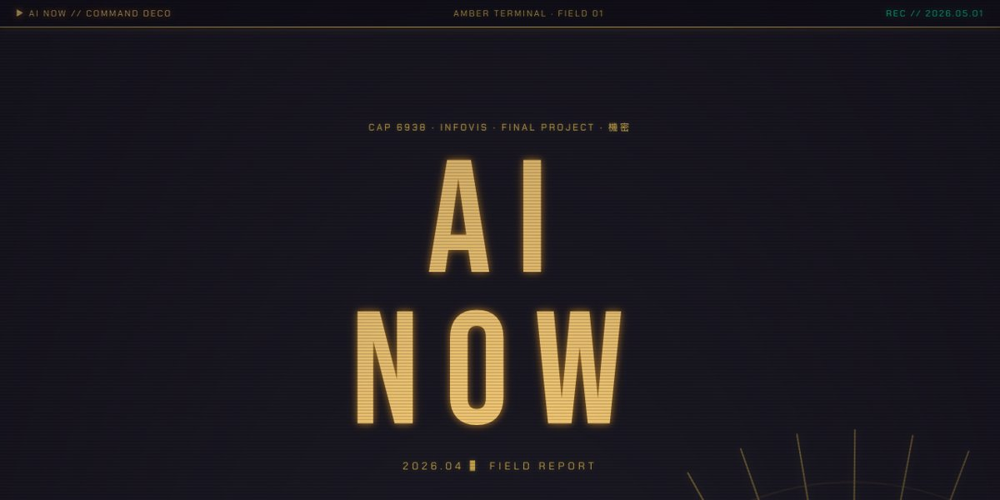
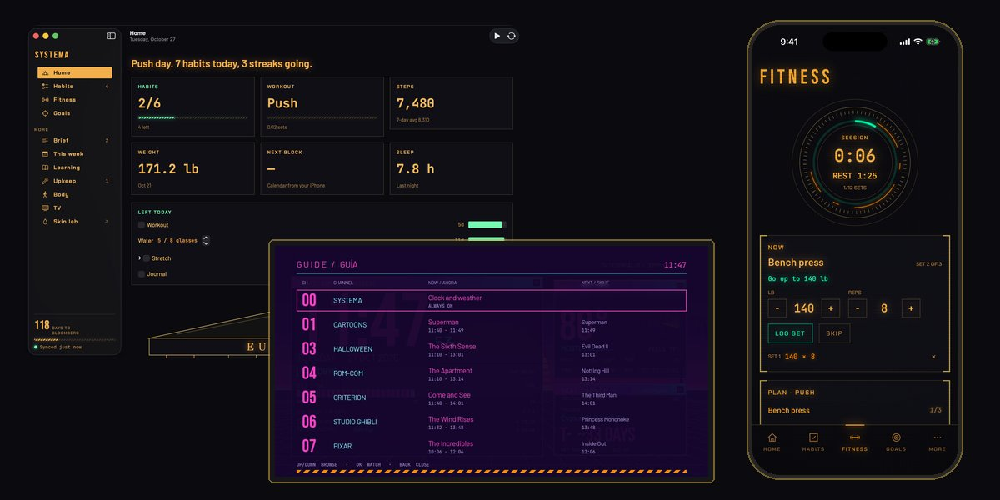

Joining Bloomberg · New York · Feb 2027
Alejandro Aparcedo
Software engineer with a background in computer vision research. I like building things end to end.
Projects

Data visualization · 2026
AI Now
A data story about the AI boom, from where the money goes to how people really feel about it.

iPhone, Mac and TV · 2026
Systema
My personal operating system. Native apps for iPhone, Mac and TV, running on my own server.
Experience
-
Software Engineer, Bloomberg · New York
Starting February 2027. -
AI Engineer, oncologic.ai
Computer-use agents that extract data from legacy systems. -
AI Research, Center for Research in Computer Vision · UCF
Video understanding with multimodal LLMs. -
Supercomputing Intern, Los Alamos National Laboratory
Built a 10-node cluster; benchmarked GPUDirect Storage and InfiniBand for AI workloads. -
AI Research Intern, Florida Solar Energy Center
Power outage prediction from nighttime satellite imagery.
Education
-
M.S. in Computer Vision · University of Central Florida
Graduating December 2026. NSF Graduate Research Fellow. -
B.S. in Computer Science · University of Central Florida
Publications
- On the Robustness of Large Multimodal Models Against Image Adversarial Attacks CVPR 2024
- Multimodal Power Outage Prediction for Rapid Disaster Response and Resource Allocation PVSC 2024
- Generalized deep learning model for photo-voltaic module segmentation from satellite and aerial imagery Solar Energy, Vol. 274, 2024